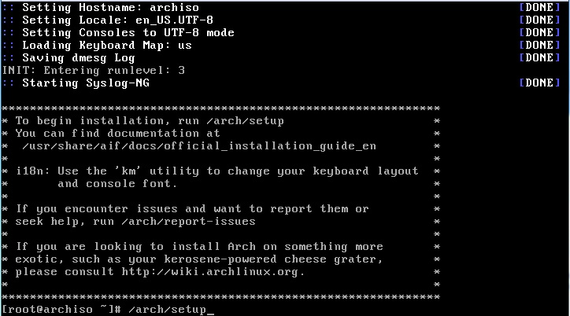

Arch Linux en lett og liten linux distro
Arch Linux er en veldig liten og lett distro som bruker KISS prinsippet. ("keep it simple, stupid"). Det vil si at koden skal være enkel og finn, men de forventer at du setter deg ned og studerer det så du leter kan bruke distroen, da den kommer uten GUI er de mye man må sette opp for å kunne bruken den som et vanlig OS med GUI.
For deler og ulemper med Arch
Som nesten alt i verden er det fordeler og ulemper med alt. Arch sin fordeler er at den er roling relase som er en modell hvor man kontinuerlig oppdater hele tiden. Da vil man alti ha den nyeste versjonen som kan ha mange fordeler som at det går mye fortere, men kan være mindre stabilt, ved at koden ikke er mye testet før man kjører det. Det som er den største ulempen til Arch er at den kommer uten GUI som man da selv må installere og sette opp, så har du ingen erfaring med å installer GUI har man et veldig største problem. Man velger nesten alt som skal ligge på distroen som gjør at den er veldig minimalistisk og har bare de du selv vil ha og ingen bloat ware.

Bilde av installasjon
Kjent for
Når det kommer til Arch, er det Arch wiki og Arch user repository som er veldig kjent. Arch wiki har et enormt samling av hvordan å sette opp forskjellige linux programmer. Grunnen til at den har så stor samling er at det er lett og veldig mange legger til programmer til Arch user repository som andre kan installer. Hvis du vil ha det nyeste av ny programmet eller et veldig ukjent program er dette stedet å finne uten å må kompile det fra grunnen av selv.